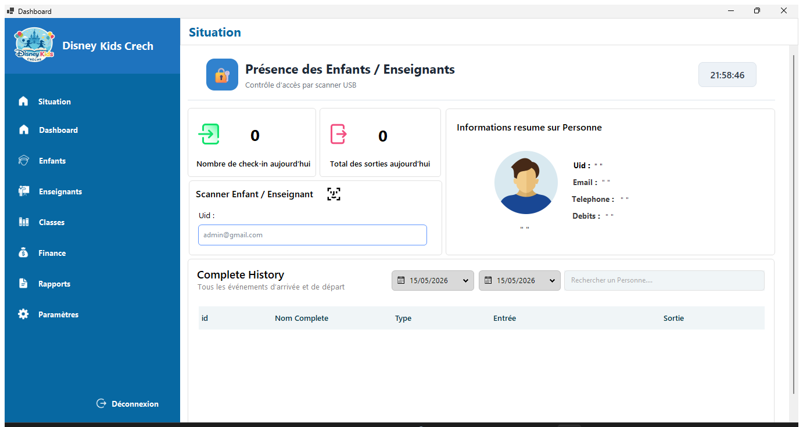
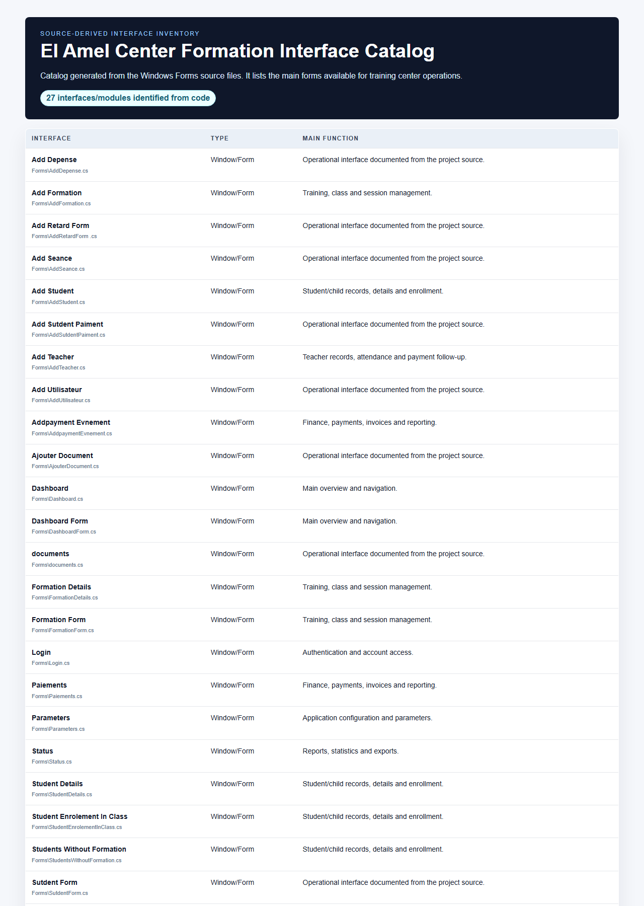

El Amel Center Formation
Training center desktop application
A Windows Forms application for a training center: students, teachers, formations, courses, sessions, attendance, payments, reports and installer packaging.
1. Contexte du projet
This desktop project centralizes daily training-center operations, from login and staff navigation to student, teacher, finance and reporting modules.
2. Objectifs
- Student and teacher records
- Formation/session management
- Attendance
- Payments
- Reports
- Installer packaging
3. Acteurs
- Administrator
- Reception staff
- Teacher manager
- Payment/accounting user
4. Interfaces et fonctions principales
| Login | Email/password authentication before accessing center management. |
| Dashboard | Central overview and navigation point for the center modules. |
| Students | Manage student profiles, details, enrollments and students without formations. |
| Teachers | Manage teachers, attendance and teacher payment operations. |
| Formations and sessions | Create formations, courses, seances and class enrollment. |
| Payments | Student payments, event payments, expenses and payment documents. |
| Documents and parameters | Upload documents, maintain school information and configure application parameters. |
5. Technologies utilisees
C#.NET 8Windows FormsEntity Framework CoreSQL ServerFluentValidation
6. Travail en equipe / collaboration
Professional desktop application work with layered architecture and a complete operational workflow for a training center.
7. Captures d'ecran reelles


8. Liens
Repository: https://github.com/tayebzitouni/El-Amel-Center-Formation
Demo: Desktop application for local Windows runtime.